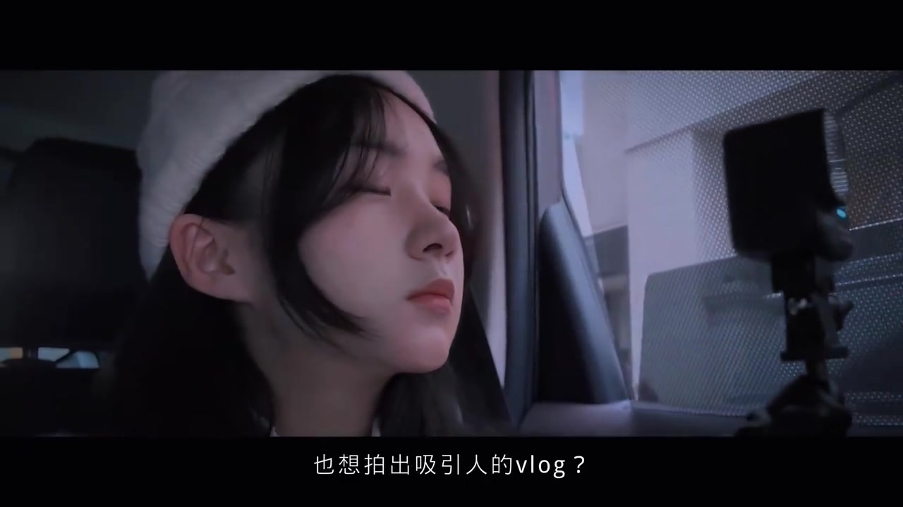
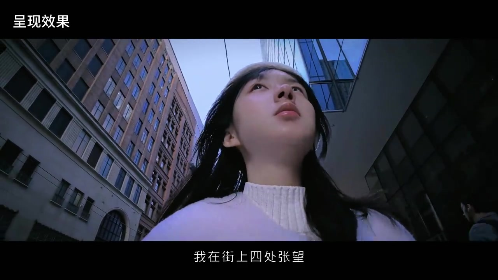
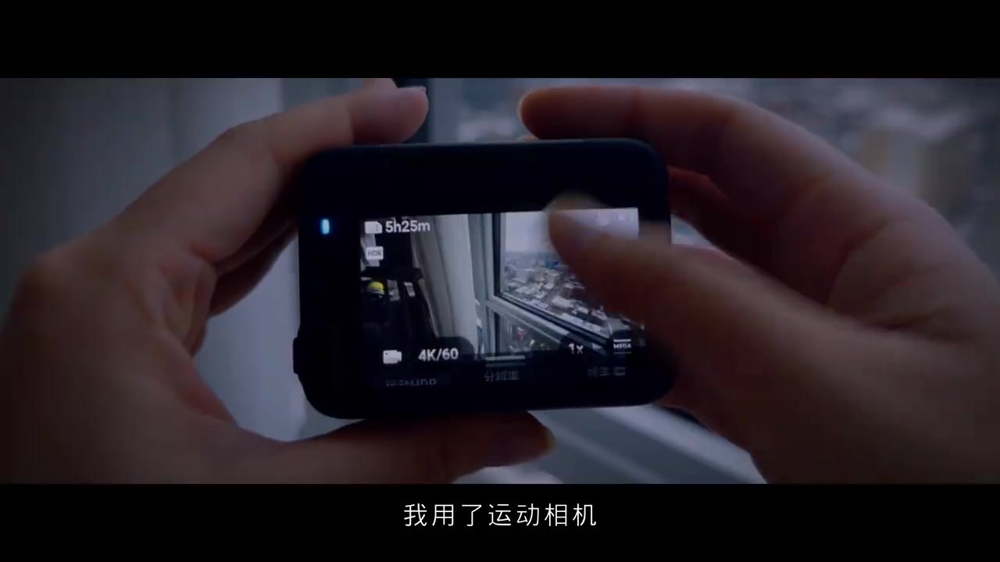
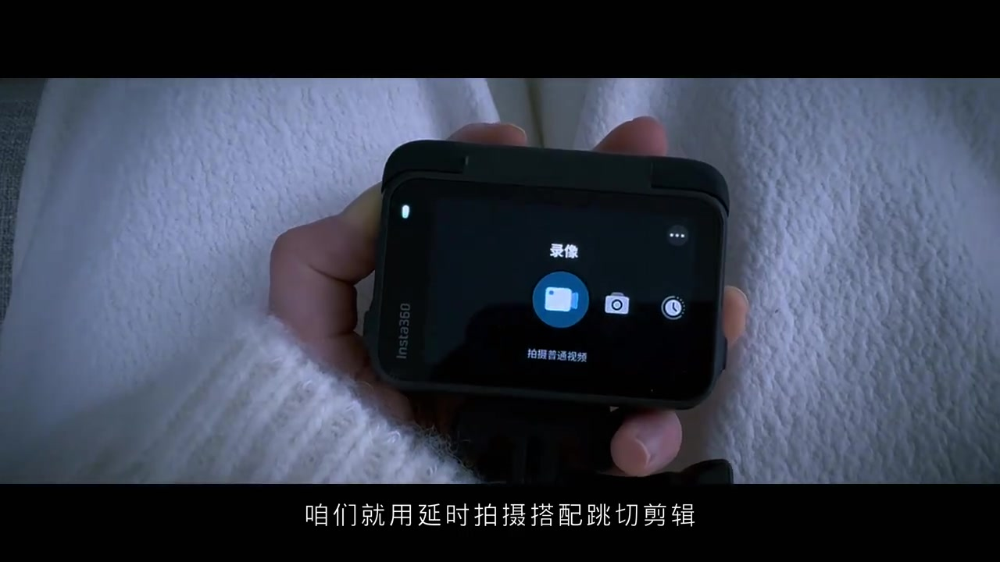
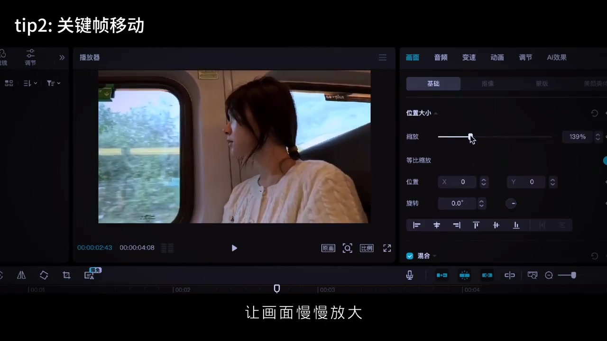
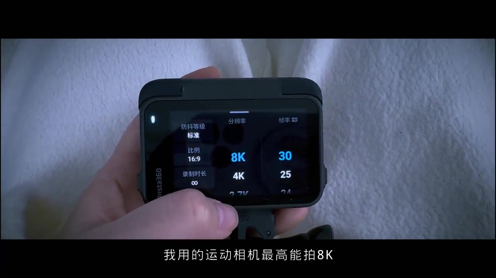
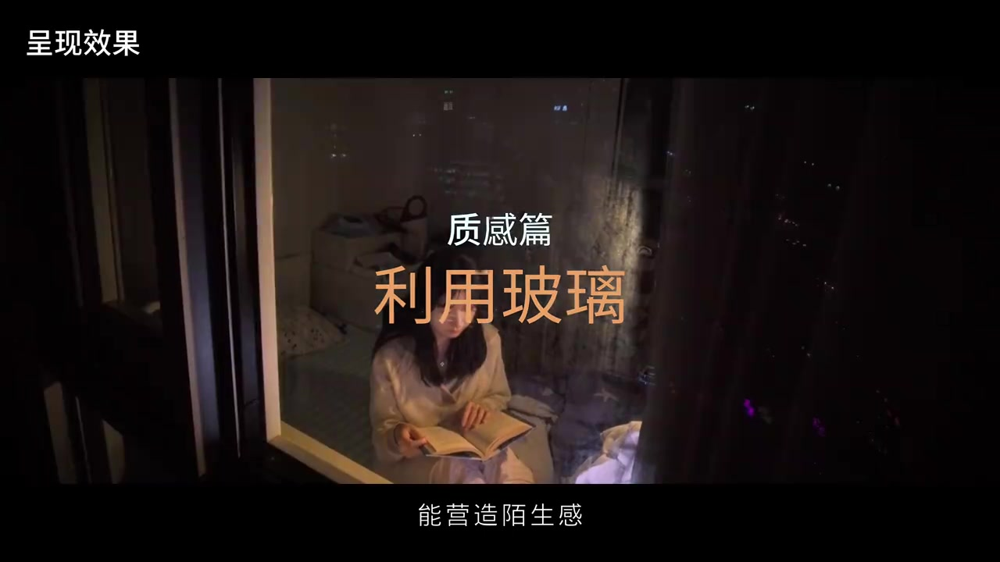
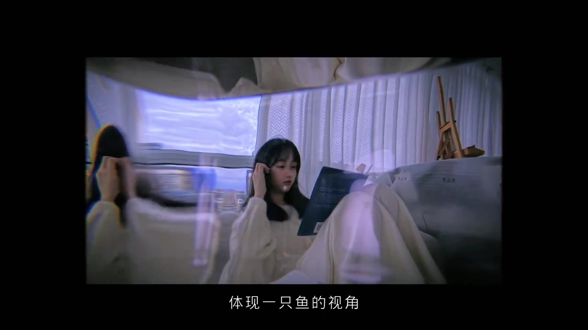

开场：你是不是也想拍出吸引人的 vlog
视频一开始就是车内特写：作者戴白针织帽闭眼侧坐，右侧一支运动相机架在支架上正对着她。字幕直接抛出问题——「也想拍出吸引人的vlog？」随后她给出答案：今天分享两个法宝，节奏和质感。

说明：笔记文案写明设备为 Insta360 Ace Pro 2，并强调体型小巧与防抖；作者昵称在元数据中缺失，索引仅保留 uploader id。Whisper 多处误识（见文末说明），叙事以可见字幕与画面为准，转录区仍保留全部原始分段。
口播 [00:00–00:08]：「你是不是也想拍出吸引人的vlog」「今天分享两个法宝」「节奏和质感」。
快切：长镜头里塞进细节短镜头
加快节奏，她最爱用快切：在长镜头之间插入补充细节的短镜头。示范段落里，她先在街巷里四处张望，快速扫过街景后再回到「我」。画面上叠着「呈现效果」标签，街景与人物切分得很紧。

速度感还离不开丝滑运镜。为了稳定性，她用运动相机并把防抖开到最大，宣称单手操作也完全没问题。镜头切到双手握住黑色 Ace 系列机身，后屏预览窗外城市，机身角标显示 4K/60。

口播/字幕语义 [00:09–00:28]：「加快节奏我最爱用快切」「在长镜头之间插入补充细节的短镜头」「快速扫过街景后再回归到我」「速度感离不开丝滑运镜」「防抖模式开到最大」。
Whisper「快速小国接近后」对照字幕≈「快速扫过街景后」；「肆华的运镜」≈「丝滑的运镜」。
延时拍摄 + 跳切：把无聊通勤剪紧
日常出行若怕画面太无聊，她建议用延时拍摄搭配跳切剪辑：剪辑时删掉中间片段，让节奏更紧凑——「就是跳切啦」。镜头给到相机模式页：录像图标高亮，文案「拍摄普通视频」，同时口播指向延时与跳切的组合。

口播 [00:29–00:38]：「日常出行时如果怕画面太无聊」「咱们就用延时拍摄搭配跳切剪辑」「剪辑时通过删掉中间片段让节奏更紧凑」。
关键帧：让画面慢慢放大
除此之外，她还喜欢用关键帧让画面慢慢放大，再配上字幕，画面就更有深度。屏幕切到剪映桌面：预览窗是火车窗边的作者，右侧「缩放」拉到约 139%，顶部标签写着 tip2「关键帧移动」。她提醒关键帧教程在第一期讲过。

口播 [00:38–00:47]：「我还喜欢用关键帧让画面慢慢放大」「再配上字幕画面就更有深度啦」「关键帧教程在第一期有讲哦」。
Whisper「自笑」对照字幕≈「字幕」；「更深度」≈「更有深度」。
移动延时：让单一长镜不再单调
在超市或马路拍摄，她建议试试移动延时：可以让单一的长镜头不再单调，还能加快节奏。这一段偏口播教学，画面仍以机身与场景提示为主，强调「边移动边延时」而不是固定机位延时。
口播 [00:48–00:55]：「在超市或者马路拍摄咱们试试用移动延时」「可以让单一的长镜不再单调还能加快节奏」。
画质与色调：8K、滤镜、后期裁切
进入质感篇：画质和色调最重要。她说自己的运动相机最高能拍 8K，还自带滤镜库，一般选「徕卡自然」，拍城市场景特别有电影感。后屏参数页可见分辨率停在 8K、帧率 30，左侧防抖等级为标准、比例 16:9。

画质越高越方便后期分镜——就算放大到 150%、200% 也不影响观感。笔记文案里她还补充：反转镜头与 8K 方便自拍和放大裁剪，实现「一机位多分镜」。
口播 [00:56–01:12]：「要提升质感的话画质和色调最重要啦」「最高能拍8K还自带滤镜库」「我一般选徕卡自然」「放大到150% 200%也不影响观感」。
Whisper「绿镜库」≈「滤镜库」；「来卡自然」≈「徕卡自然」（笔记文案亦写内置徕卡滤镜）。
陌生化：玻璃、水、鱼眼与「蓝莓」转场
透过玻璃拍摄能营造陌生感，很适合上帝视角巡视；她还结合跳切表现时光流逝。示范镜头是窗外看室内：作者低头读书，玻璃上叠着城市灯火反射，标签写着「质感篇 · 利用玻璃」。

也可以用水做陌生化处理，拍出特殊光影，并发挥想象——体现一只鱼的视角，或一颗蓝莓的视角。若相机够小巧，就塞进盒子里伪装成蓝莓，让它静静躺在水底，借助自由落体完成梦幻转场。画面出现强烈折射/鱼眼形变，字幕「体现一只鱼的视角」。

口播 [01:12–01:40]：「透过玻璃拍摄能营造陌生感」「也可以利用水来做陌生化处理」「伪装成一颗蓝莓吧」「借助蓝莓的自由落体完成一个梦幻的转场」。
Whisper「上帝视角讯时」≈「上帝视角巡视」；「时光流时」≈「时光流逝」；「近近的躺在水底」≈「静静地躺在水底」。
这一趟看完留下什么
整支 1 分 45 秒的短片，把电影感拆成「剪得紧」和「看得有质感」两条线：快切、跳切、关键帧、移动延时管节奏；8K/滤镜、玻璃与水的陌生化管质感。设备与配件细节（三折三脚架、1/4" 转三爪）写在笔记文案里，口播未展开。